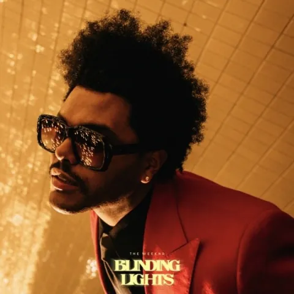
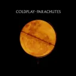

Desktop lyrics, reimagined for the Mac.
Lyric, meet Muse. Hand the lyrics to your muse. You just listen.
Open source · macOS 14 or later · Apple Silicon and Intel


Works with the players you already use
Video
Lyrimuse in 30 seconds. See it before you install it.
The notch, the menu bar, readings for foreign lyrics and the settings with their live preview, in half a minute.
Display
Four ways to show lyrics, use as many as you like.
A full Lyrics Window, a capsule under the notch, the menu bar, and an overlay that floats above every window.

Translation and readings
Sing along, in any language.
Translations sit under the line, and readings sit under the exact words they belong to.
Even the sadness of that day
Kenshi Yonezu · Lemon
Lyric matching
Twelve lyric sources, one right answer.
Every result is scored the same way and the best one wins. Wrong one? Search or edit it, and your pick stays locked.
-
MusixmatchWinnerWord-timed1,288
Word timing +400 · Duration match +274 · Content corroborated +250 · Album match +150 · Title match +120 · Lines +94
-
NetEase Cloud MusicWord-timed1,262-26
Duration match -68 · Has translation +50 · Lines -8
-
QQ MusicWord-timed1,170-118
Album match -150 · Duration match +40 · Lines -8
-
Kugou MusicWord-timed1,150-138
Duration match -130 · Lines -8
-
LRCLIB903-385
Word timing -400 · Duration match +20 · Lines -5
All 5 candidates scored identically on: Title match +120 · Content corroborated +250
5 of 12 sources answered

Blinding LightsThe WeekndAfter HoursScore 1288 · 41 linesMusixmatchWord timingIn use-
Blinding LightsThe WeekndAfter HoursScore 1262 · 41 linesNetEase Cloud MusicWord timingTranslation
-
Blinding LightsThe WeekndBlinding Lights - SingleScore 1170 · 40 linesQQ MusicWord timing
-
Blinding LightsThe WeekndAfter HoursScore 1150 · 40 linesKugou MusicWord timing
- Alone Again The WeekndAfter HoursMusixmatch0.0
- Too Late The WeekndAfter HoursMusixmatch0.0
- Hardest to Love The WeekndAfter HoursNetEase Cloud Music0.0
- Scared to Live The WeekndAfter HoursMusixmatch0.0
- Snowchild The WeekndAfter HoursQQ Music0.0
- Escape from LA The WeekndAfter HoursMusixmatch0.0
- Heartless The WeekndAfter HoursNetEase Cloud Music0.0
- Faith The WeekndAfter HoursMusixmatch0.0
- Blinding Lights The WeekndAfter HoursMusixmatch+0.2
- In Your Eyes The WeekndAfter HoursQQ Music0.0
Listening profile
Every play, kept in your listening profile.
Scrobbles to Last.fm and ListenBrainz, with stats, charts and a year-long footprint.
- Blinding LightsThe WeekndPlay #38Scrobbling now
- Cruel SummerTaylor SwiftPlay #214 min. ago
- Birds of a FeatherBillie EilishPlay #178 min. ago
- As It WasHarry StylesPlay #912 min. ago

YellowColdplayPlay #1216 min. ago- drivers licenseOlivia RodrigoPlay #3020 min. ago
- 1
The Weeknd
×486= - 2
Taylor Swift
×352▲1 - 3
Billie Eilish
×298▼1 - 4
Harry Styles
×231▲2 - 5
Olivia Rodrigo
×174▼1 - 6
Coldplay
×126
- 1
After HoursThe Weeknd
×312▲1 - 2
LoverTaylor Swift
×268▼1 - 3
HIT ME HARD AND SOFTBillie Eilish
×205▲3 - 4
Harry's HouseHarry Styles
×184= - 5
SOUROlivia Rodrigo
×151▼2 - 6
ParachutesColdplay
×97
- Blinding LightsThe Weeknd×9
- Cruel SummerTaylor Swift×6
- YellowColdplay×5
Make it yours
Tune every detail, and watch it change as you do.
Fonts, colours, widths and positions, each page with a live preview. Drag the slider to try it.
And there's more.
- Duets side by side
- Background vocals on their own line
- Motion album art
- Album notes and artist bios
- Lyrics in Simplified or Traditional
- Nudge lyric timing
- Upcoming tracks resolved in advance
- Works offline
- Missing lyrics retried automatically
- Added Soda Music, KKBOX and Amazon Music as built-in players, bringing the total to eight
- Lyrics for the next songs in your queue are now ready before they play
- Lyrics your players already saved on your Mac are now used directly, without a search
Which Macs does it support?
macOS 14 Sonoma or later, on Apple Silicon and Intel; Intel Macs use a separate build. Translating lyrics on your Mac needs macOS 15 or later.
How do I install it?
With Homebrew: copy the install command above and paste it into Terminal. It takes care of the one-time Gatekeeper prompt, and you don't need an Apple Developer account. Or download the DMG and drag Lyrimuse into Applications. The app isn't notarized by Apple, so macOS blocks the first launch: open System Settings → Privacy & Security, scroll to the bottom and click Open Anyway. You only do this once. Updates come through the app after that.
Which permissions does it need?
The first time it reads Apple Music or Spotify, macOS asks whether Lyrimuse may control it (Automation); allow it. QQ Music, NetEase Cloud Music, Kugou, Soda Music, KKBOX and Amazon Music need nothing extra.
Does any of my data leave my Mac?
There's no account, no telemetry and no analytics, so nothing about you or what you play goes to the developer. To find lyrics it asks the lyric sources about the song that's playing, and translation happens on your Mac by default. The privacy policy lists every server it talks to.
Do lyrics work offline?
Yes. Lyrics it has found once are cached on your Mac and show without a connection. The first lookup for a song needs one, and so does online translation.
Does the Dynamic Island capsule work on a Mac without a notch?
Yes. On a screen without a notch, like an older MacBook or an external display, the capsule sits at the top center, as tall as the menu bar. You pick the screen in Settings.
What if the lyrics are wrong or out of sync?
If the timing's off, shift it for that song and it's remembered. If it's the wrong version, open manual search and pick another one; your pick stays locked. You can also edit any song's lyrics in Lyrics Manager.
How is it different from LyricsX?
LyricsX's last release is v1.6.3 from April 2022. Lyrimuse needs macOS 14 or later and adds QQ Music, NetEase Cloud Music, Kugou, Soda Music, KKBOX, Amazon Music and YouTube Music, scored lyric matching, Jyutping and Japanese romaji, and Last.fm scrobbling. See the fact-checked comparison.
Let the next song light up.
macOS 14 or later · Apple Silicon and Intel · Open source, GPL-3.0